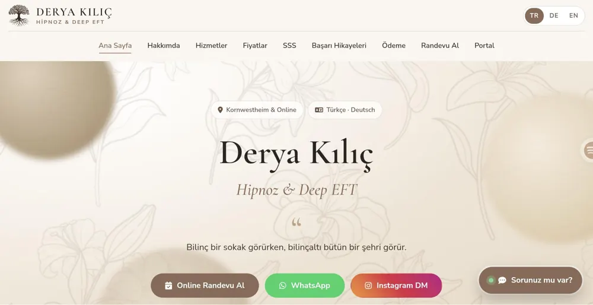
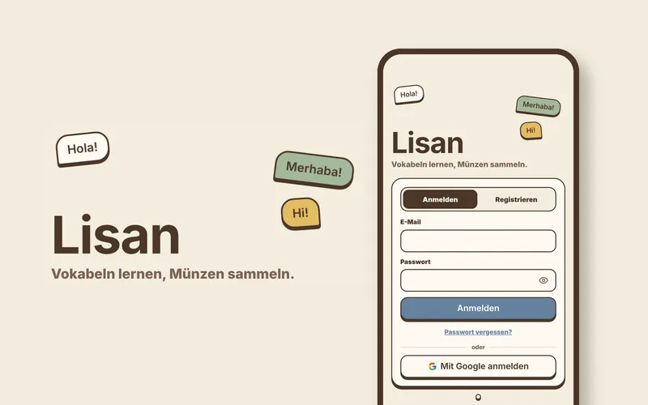

Level 01 / 03
Başlangıç
Annemin işi için bir web sitesine ihtiyacı vardı. Siteyi kendim geliştirmeye karar verdim.
15 yaşındayım ve web siteleri geliştiriyorum. Her şey bir fikirle başlar, kodla havalanır.
Teknoloji · Fikirler · Merak
KaydırBir soru
Bir kâğıt parçası neden uçamasın ya da yüzemesin?
Düşünceleri erken aşamada sınırlamamak gerektiğine inanıyorum. Çünkü alışılmadık bir fikirden değerli bir şey doğabilir.

Fareyi fotoğrafın üzerinde gezdir: büyüteç bölgeyi koda çevirir.Fotoğrafa dokun ve parmağını kaydır: büyüteç bölgeyi koda çevirir.
Hakkımda
15 yaşındayım; web geliştirme, teknoloji ve yaratıcı fikirlerle ilgileniyorum. Benim için yaratıcılık yazılımla sınırlı değil: Donanımdan robotiğe, gündelik hayatı kolaylaştıran icatlara kadar uzanıyor.
İlgi alanlarım
Teknoloji tek ilgi alanım değil. Bu dünyada keşfedilecek, anlaşılacak ve kendi elimizle yaratılacak çok şey var.
Yazılım, donanım ve robotik: Tasarlanıp denenebilecek her şey ilgimi çekiyor.
Çok okurum ve kendi kitaplarımı ile kısa hikâyelerimi yazarım.
Doğadan yıldızlı göğe: Dünyanın nasıl işlediğini anlamak istiyorum.
Açık havada ve hareket halinde ekran başındaki çalışmaya denge buluyorum.
Dünyanın nasıl bu hale geldiğini anlamak ve nasıl devam edeceği konusunda söz sahibi olmak istiyorum.
Kendi fikirlerimi tutarlı biçimde takip ediyor ve sürekli yeni şeyler öğreniyorum.
Web geliştirmeye giden yol
Level 01 / 03
Annemin işi için bir web sitesine ihtiyacı vardı. Siteyi kendim geliştirmeye karar verdim.
Level 02 / 03
Her adımda yeni özellikler eklendi: randevu takvimi, danışan portalı, ödeme sayfası ve yorumlar.
Level 03 / 03
Teknoloji ve programlama bugün hayatımın sabit bir parçası. Öğrenmeye devam ediyor ve kendi fikirlerimi hayata geçiriyorum.
“Bir proje hobi oldu, hobi de tutku.”
Projelerim
Her yeni projeyle koleksiyon büyüyor.

İlk projem: randevu takvimi, danışan portalı, ödeme sayfası, yorumlar ve sohbet asistanı.
Siteyi aç ↗
Oyun gibi kelime öğrenme uygulaması: kelime öğren, para topla, kendi hayvanını ve odanı süsle. Öğrenme planı, mini oyunlar ve fotoğrafla tarama.
Uygulamayı aç ↗03Sıradaki proje yolda…
Yakından
Annemin işi için geliştirdiğim site ilk projemdi. HTML, CSS ve JavaScript ile yazdım; ilk sürümü tamamen sıfırdan oluşturdum. Yandaki demo asistan, o sitedeki sohbet kutusunun mantığını gösteriyor.
Geri bildirim
Geri bildirimlerin benim için değerli. Her yorum, kendimi geliştirmeme yardımcı oluyor.